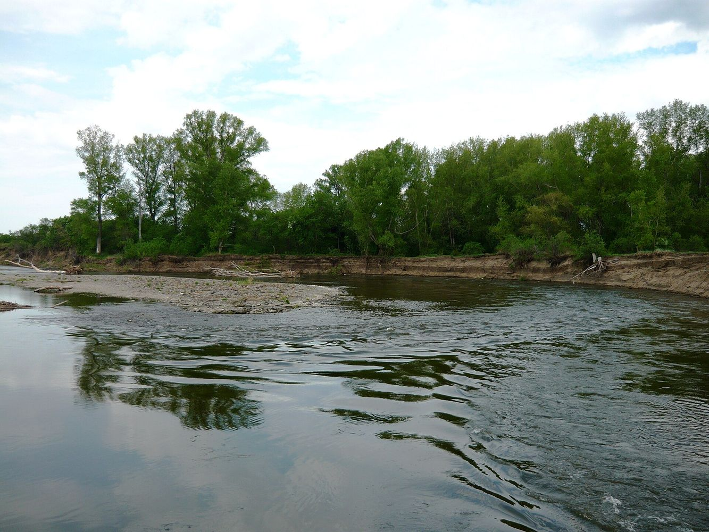

Чрезвычайные
ситуации природного
характера
Стихийные бедствия не спрашивают разрешения. Разбираемся, что это такое, как они возникают, чем грозят и — главное — как действовать, чтобы выжить. Главный упор — на Россию и наш край: Оренбургскую область. В конце — раздел «Что делать».


Стихия в нашей стране
Россия — крупнейшая страна мира: 11 часовых поясов, от арктических пустынь до субтропиков. Стихийные бедствия здесь не «привозят» — они случаются рядом каждый год, и почти в каждом регионе свои.
Чем Россия отличается от других стран
У нас почти нет ураганов и торнадо, но есть то, чего нет больше нигде в таком объёме: крайний север с метелями и наледью, тайга с пожарами на тысячи гектаров, Камчатка и Курилы с вулканами и цунами, Кавказ с оползнями и лавинами и степной юг с засухой и пыльными бурями.
Для сравнения: где бедствия в мире
Вывод: Россия не «одна большая опасность» — это десяток разных стихий, и в каждом регионе надо готовиться к своей.


Климат России рождает бедствия
Климат — причина большинства стихийных бедствий в России: именно он даёт жару и засуху, ливни, наводнения, метели, наледь и лесовые пожары. Страна огромная, поэтому климат в ней меняется от арктического до южного — и опасности везде свои.
Климатические пояса и их стихия
| Пояс | Климат | Чем опасен |
|---|---|---|
| Арктический | Очень холодный, ветреный | Бураны, наледь, «белые шквалы», заторы на реках |
| Субарктический | Суровый, малоснежный | Ледовые заторы, весенние наводнения, пожары в тайге |
| Умеренный | Континентальный | Лето — грозы и град, зима — метели, весна — половодье |
| Южный | Тёплый, засушливый | Засуха, суховеи, пыльные бури, степные пожары |
Климат меняется — и меняет опасности
Потепление увеличивает число засух, пожаров и ливневых наводнений: обычные дожди превращаются в опасные ливни, а снег тает раньше — вода приходит к рекам одномоментно.
Что делают: строят плотины и водохранилища, создают лесные полосы против эрозии и пыльных бурь, укрепляют берега, вводят нормы строительства в сейсмичных зонах.


Оренбуржье: природа и климат
Четыре природные зоны области
Природа и водные ресурсы
- Река Урал — одна из крупнейших рек Европы (2428 км, из них 1164 км в области). Также Сакмара, Илек, Самара
- Озеро Шалкар-Ега-Кара — крупнейший водоём области (9600 га). Знаменитые солёные озёра Соль-Илецка
- Высшая точка — гора Накас (667 м), низшая — у реки Чаган (27 м)
- Чернозёмы занимают 79% пашни — почвы очень плодородные, область — важный аграрный регион
Что из этого следует для нас
- Лето — опасная пора: засуха, суховеи, пыльные бури, грозы с градом, пожары
- Весна — половодье: талый снег даёт подъём воды в Урале, Сакмаре, Илеке
- Зима — капризная: то метели, то оттепель с наледью и гололёдом



Какие стихийные бедствия бывают у нас
Засуха и суховеи
главная опасность регионаИз-за резко континентального климата осадков мало, а 60–70% выпадает летом. В засуху пересыхают реки и озёра, гибнет урожай, падает уровень грунтовых вод, резко растёт риск пожаров.
Пыльные и «сальные» бури
ветер + сухая почваСильный ветер поднимает пыль с распаханных земель — в воздухе стоит плотная буря, падает видимость, уносит верхний плодородный слой. Настоящее «сальное явление» переносит через регион огромные объёмы пыли, иногда с зарубежья.
Наводнения (половодье)
весна: таяние снега + дождиВесной река Урал, Сакмара, Илек выходят из русла и затапливают прибрежные сёла. Под водой — поля, дороги, мосты и дома. Летние ливни тоже дают резкий подъём воды в балках и оврагах.
Грозы, град и ураганы
резкие перепады погодыЛетом бывают сильные грозы и крупный град, который бьёт по крышам домов, автомобилям и посевам. Шквалы и ливни ломают деревья и рекламные конструкции, переносят мусор, подтапливают дома.
Бураны, метели и гололёд
зима и межсезоньеЗимой метели и снежные навалы парализуют дороги, закрывают школы. Сильные перепады «оттепель → мороз» дают гололёд и наледь: падают ветки и лёд с крыш, скользкая дорога опасна для авто и пешеходов.
Оползни и обвалы
склоны Предуралья и Южного УралаНа относительно крутых и застроенных склонах после сильных дождей возможны оплывины и оползни — особенно в Предгорном районе и на хребтах Губерлинские горы, Ирендык. Под угрозой — дачи, дороги, садовые участки.

Землетрясения Оренбуржья
Наша область находится в спокойной тектонической зоне. Здесь нет активных разломов, поэтому сильных катастрофических землетрясений не бывает — но небольшие толчки регистрируются.
Что это значит на практике
- Отсильного землетрясения мы защищены географически
- Но трясти может быть — и люди, привыкшие, что не бывает, теряются сильнее всего
- Опасность для нас — не разрушения, а паника и неготовность
- Нужно знать простые правила (через два слайда — раздел «Что делать»)
Самые заметные события в регионе
- 10 июля 1983 — М5,3 в 22 км от Илека
- 21 июля 1984 — М5,4 в 21 км от Илека, самый сильный толчок за всю историю наблюдений
- 26 апреля 2008 — М5,1 на границе с Казахстаном
- 15 февраля 2013 — знаменитый Челябинский метеорит (долетел до соседней области)
Вывод
Ждать большого землетрясения в Оренбуржье не нужно — но и верить, что «это невозможно», тоже нельзя. Слабые толчки будут, и задача не в том, чтобы их бояться, а в том, чтобы знать, что делать: не паниковать, не бежать на улицу, не пользоваться лифтом. Разберём это в разделе «Что делать».
Открой 3D-карту и проверь сам
На слайде «3D-карта: хроника ЧС» выбери регион Оренбуржье — карта покажет все события и рамку области. Сравни с режимом «Мир»: там десятки тысяч точек, а у нас — два десятка точек за 75 лет. Это нагляднее любой таблицы.
Вывод для урока: сейсмическая опасность распределена по России очень неравномерно, и это надо знать — и для того, чтобы не бояться зря, и чтобы быть готовыми там, где нужно.


Что такое чрезвычайная ситуация
ЧС — это обстоятельства, при которых опасность реализовалась или может реализоваться
Человек, группа людей, государство или окружающая среда не могут самостоятельно преодолеть последствия без специальных мер. Главный признак — угроза жизни и здоровью людей.
Природные
стихийные бедствия- Землетрясения, цунами, вулканы
- Торнадо, ураганы, тайфуны
- Наводнения, оползни, сели, лавины
- Лесные пожары, засухи, пыльные бури
Техногенные
аварии, катастрофы- Аварии на АЭС и химических заводах
- Взрывы, пожары, крушения транспорта
- Обрушение зданий, аварии на трубопроводах
Экологические
среда обитания- Загрязнение воздуха и воды
- Кислотные дожди, вырубка лесов
- Разрушение экосистем
Биологические
живые организмы- Эпидемии и пандемии
- Вспышки инфекций, вредители
Чем природная ЧС отличается от техногенной
- Источник опасности — сама природа
- Не связана с деятельностью человека
- Часто непредсказуема во времени
- Источник — ошибки людей и техники
- Авария на производстве или транспорте
- Можно предотвратить профилактикой

Цепочка событий
Чем раньше распознана опасность и быстрее реагируют люди, тем меньше жертв. Именно об этом мы поговорим в разделе «Что делать».
Кто отвечает за помощь
- МЧС России — спасатели, пожарные, медицина, поисково-спасательные отряды
- Полиция и ГИБДД — перекрытие дорог, оцепление, охрана порядка
- Службы ЖКХ — газ, вода, электричество, отключение аварийных участков
- Администрация — эвакуация, размещение в пунктах временного проживания
- Волонтёры — доставка помощи, помощь пострадавшим
Первым на место прибывает единая служба спасения — 112. Именно на неё мы рассчитываем в первую очередь.
🌐 Землетрясение
Землетрясение — внезапное нарушение целостности земной коры: горные породы трескаются, сдвигаются, блоки коры перемещаются. Это самый разрушительный и самый непредсказуемый вид ЧС.
Как это происходит
Главные опасности


Шкала магнитуд Рихтера
Каждый следующий балл — примерно в 30 раз больше энергии, чем предыдущий.
Современный аналог — шкала ML (moment magnitude), но по принципу она такая же.
🌊 Цунами
Цунами (япон. «волна порчи») — серия огромных волн, вызванных резким смещением дна океана. Это не обычный прибой: в открытом море волна почти незаметна, но у берега внезапно вырастает до десятков метров.
Причины возникновения
Что происходит с волной
- Скорость в океане — 700–900 км/ч (как самолёт!), но высота всего 0,5–1,5 м
- У берега вода мелеет, волна резко теряет скорость и растёт в высоту
- Первое движение воды — отступление моря (видно дно!) — это сигнал бежать
- Затем приходит стена воды, которая сносит всё: дома, мосты, поезда, лес
- Вода откатывается и уносит всё обратно, в том числе людей в океан
⚠️ Запомни
В России сильные цунами бывали на Камчатке (1952) и на Курилах. Самое разрушительное цунами в истории — в Индийском океане в 2004 году: погибло более 227 000 человек в 14 странах.
Признаки цунами — беги!
Правило: отойти от берега ввысь (в гору) или на 1,5–2 км от берега. Не бежать поперёк потока и не пытаться спасти вещи!
🌋 Извержение вулкана
Вулкан — горная постройка с выводящим каналом, через который магма выходит на поверхность. Извержение — это не «взрыв», а выброс горных пород, газа и лавы.
Виды вулканов
Три главные опасности вулкана
- Лавовый поток — не очень быстрый (от 1 до 300 м/ч), но неумолимый: сжигает и заливает всё
- Пеплопад и газы — вулканическая пыль оседает на крышах, рушит их; газы вызывают отравление
- Пирокластический поток — раскалённая смесь газа и камней со скоростью до 700 км/ч. Это смертельно в секунды. В России главные вулканические опасности — на Камчатке и Курилах: пеплопад, лавины, выброс пепла на самолёты
Интересный факт
Извержение вулкана Тамбора (1815) выбросило столько пепла, что по всей Земле прошли «год без лета»: небо тускло, аномальные заморозки, голод у миллионов людей. Вулканы способны менять климат планеты.
🌊 Наводнение
Наводнение — подъём уровня воды в реке, озере или море, при котором вода выходит из русла, поймы и затапливает прилегающую территорию. Самое частое стихийное бедствие в России.
Почему бывают наводнения
Как спасаться
- Подняться на верхний этаж или возвышенность — вода не проходит там, где стоит сухо
- Закрыть газ, электричество, воду — токи смертельны
- Не плавать на машине по дороге: 1 метр воды сносит легковой автомобиль
- Двигаться только по известным безопасным маршрутам, держась за стены
- Взять с собой документы, воду, аптечку, телефон и заряженный пауэрбанк
⚠️ Не делай этого
- Не спускайся к реке «посмотреть на воду» — вода приходит стремительно
- Не переезжай по горной дороге во время ливня — возможен оползень
- Не пей воду из водопровода до очистки — риск инфекций
- Не трогай руками оборванные провода и не входи в затопленные подвалы


🔥 Лесные и торфяные пожары
Лесной пожар — неконтролируемое горение растительности, которое распространяется со скоростью до 20 км/ч и вместе с торфяным пожаром горит под землёй месяцами.
Низовой
Горит трава, кустарник, подстилка. Быстрый, но можно потушить.
Верховой
Горит крона — огонь идёт по кронам со скоростью ветра. Не остановить без авиации.
Торфяной
Горит под землёй, без пламени и дыма. Тушить водой — только усугубишь: вода превращается в пар.
Причины пожаров
Более 80% лесных пожаров — по вине человека. Это значит, что пожар можно предотвратить.
⚠️ Опасность дыма
Очень опасен угарный газ CO — не имеет цвета и запаха, но отравляет мгновенно. Также вредны мелкодисперсные частицы: попадая в лёгкие, они оседают там на годы. В задымлённом помещении закройте двери, окна, загерметизируйте щели мокрой тканью.

Если вы оказались в лесу при пожаре
- Звоните 112 и сообщите точное место — даже если пожар небольшой
- Отходите перпендикулярно фронту огня и вверх по склону
- Дышите через мокрую ткань, пригнитесь как можно ниже
- Если горит трава — бегите по уже пройденному месту или по зимнему снегу
- Не открывайте двери в горящий дом — вспышка обратной тяги убьёт мгновенно
⛰️ Оползни, сели и лавины
Оползень — смещение массы горных пород по склону вниз под действием силы тяжести. На склоне всегда накапливается напряжение — и в какой-то момент камень не выдерживает.
Оползни
Смещение грунта и камней. Бывают оплывины (грязь + торф) — самые опасные: несут дома и лес.
Селевые потоки
Смесь воды, грязи и камней с горных водосборов. Скорость до 100 км/ч — не остановить.
Лавины
Сход снежных масс со склона. Скорость до 300 км/ч, воздушная волна сносит всё даже вне пути.
Что вызывает оползень
Признаки приближающегося оползня
- Трещины на склоне и на стенах зданий, «просадка» фундамента
- Звук, похожий на гром или потрескивание из-под земли
- Мутные ручьи, вода в реке стала мутной и поднялась без дождя
- Необычные зигзаги на дороге, разрывы трубопровода, смещение заборов
- Птицы и звери массово уходят со склона — это главный природный сигнал!

Как защититься
- Не строить дом на крутом склоне и у подножия горы
- Не вырубать лес на склонах — корни держат грунт
- При ливне не ходить в горы и ущелья, не спускаться в долины
- Слышали шум воды/грунта — сразу уходите поперёк склона и выше, а не вниз по нему
- В лавиноопасный сезон не кататься на лыжах на склонах без контроля
🏔️ Это касается и нас
В Оренбуржье и на Южном Урале есть всё, что запускает оползень: крутые береговые склоны рек Урал, Илек, Таналык, весеннее таяние снега и ливни мая–июня, а местами — следы прошлых оползней и осыпей.
Особенно внимательно — в Предгорном районе и на участках, где строят дома прямо у обрыва.Лавины у нас не типичны: снег у нас не лежит большими пластами на горных склонах. Зато селевые и оплывневые потоки в горах Кавказа и Алтая — вполне реальная история.
🌀 Грозы, ураганы, смерчи, град
🌀 Ураган (тайфун)
Мощный тропический вихрь над океаном с «глазом» в центре, спиральными дождями и ветрами 120–300+ км/ч. Рождается над тёплым морем (от 26–27 °C), усиливается, пока хватает тепла, и идёт к берегу. Приносит ветер, наводнение, огромную волну, молнии и град.
🌪️ Торнадо (смерч)
Вихревое вращение воздуха диаметром от десятков метров до 2–3 км, втягивает воздух к центру и выносит вверх. В ядре ветер 300–500 км/ч, давление падает так сильно, что может лежать сдутый дом. Область поражения узкая, но разрушительная. У нас в России — крайне редкое явление.
⛈️ Гроза, град, шквал, ливень
- Молния — разряд в 30 000 °C, в 5 раз горячее поверхности Солнца; опасно на расстоянии до 10 м
- Град — ледяные шары до 10 см; бьёт по крышам, машинам и посевам
- Шквал — резкий порыв до 40–60 м/с: ломает деревья, сносит крыши, переворачивает машины
- Ливень — за час может выпасть месячная норма: ливнёвки, оползни, подтопления
Правила во время грозы и шторма
- Убрать с улицы всё, что может улететь; закрыть окна
- Спрятаться в подвал или на нижний этаж внутри здания, подальше от окон
- Не стоять под одиноким деревом, у водоёма, на открытом поле
- В грозу убрать из рук металл: зонт, удочку, ключи, телефон
- Помнить: гром через 3 секунды — молния примерно в 1 км

🇷🇺 А что это значит для России
Тайфуны к нам не приходят: для них нужен тёплый океан, а море у нас холодное. Но смерчи у нас бывают — особенно на юге (Черноезёмье, Поволжье, Северный Кавказ) и в средней полосе. Самые опасные для нас — не вихри, а ливни, шквалы, грозы и град.
Именно они каждый год бьют по городам: смыкает ливнёвки, сносит крыши, оставляет поля без урожая. На Южном Урале и в Оренбуржье сюжеты повторяются каждый год — грозы с градом и ливнями в мае–июне.
Как нас предупреждают о ЧС
🔬 Чем измеряют и следят
- Сейсмографы — фиксируют даже микроземлетрясения; по ним строят карту разломов
- Метеорадиолокация — радары видят вихри, смерчи и дождевые фронты за 100–300 км
- Спутники — наблюдают за океанами, вулканами, льдами и пожарами по всей планете
- Сейсмические буи в океане — предупреждают о цунами за десятки минут
- Камеры и датчики на вулканах, склонах, реках и озёрах
- Система оповещения — сирены, SMS, сообщения на ТВ и радио
Точно предсказать землетрясение учёные пока не могут, но предупреждение о шторме, прогноз паводка и сигнал о цунами реально спасают тысячи жизней.
Насколько опасно: уровни ЧС
| Уровень | Класс | Что происходит | Пример |
|---|---|---|---|
| Низкая | Локальная | Пострадавших единицы, помощь без сил МЧС | Локальный оползень, подтопление подвала |
| Повышенная | Муниципальная | Десятки пострадавших, подключаются спасатели города | Сильный ливень, дерево на машину |
| Высокая | Региональная | Сотни пострадавших, разрушены здания и дороги | Землетрясение 6–7 баллов |
| Чрезвычайная | Федеральная | Тысячи жертв, полная перестройка системы управления | Цунами 2004 г., землетрясение 2011 г. |
Зелёный
Школа работает, опасных явлений не ожидается
Жёлтый
Повышенная готовность: проверяются документы, заряжаются телефоны, звучат сирены
Красный
Эвакуация немедленно: движение по маршруту в укрытие или на возвышенность
Как подготовиться заранее
- Знать адрес ближайшего укрытия и пункта эвакуации
- Собрать тревожный рюкзак и держать у входа
- Включить оповещения о ЧС в телефоне
- Знать номера экстренных служб: 112, 101, 102, 103, 104
Что нас научили катастрофы
Факты, которые изменили мир
- 1964, Аляска: землетрясение 9,2 балла порушило Аляску — ускорили введение строгих строительных норм
- 1974, Узбекистан: ураган и провал Амударьи привели к созданию системы противопаводковых плотин
- 1985, Мексика: землетрясение — в училищах начали тренировать детей
- 2004, Индийский океан: цунами унёс 227 000 жизней → в Индии и Японии построили системы предупреждения
- 2011, Япония: после цунами Фукусимы Япония перестроила все здания, парси и систему оповещения
- 2016, Зебрюг (Бельгия): шквал сорвал крыши — в Европе усилили требования к креплению кровли
Главный вывод
От каждой катастрофы человечество должно вынести вывод и изменить правила: новые нормы строительства, системы оповещения, техника спасения, обучение населения. Там, где выводы сделаны, жертв заметно меньше.
Сколько детей может спасти подготовка
Правило для каждого
- Знай, где выходы и укрытия в своём доме, школе
- Держи тревожный рюкзак у входа — он может спасти жизнь
- Всегда выполняй сигналы тревоги — это не «учебная шутка»
- Расскажи о ЧС родителям и друзьям
- Не проходи мимо чужой беды — помощь важнее любопытства
Что нужно запомнить
Экстренные номера
Работает даже без SIM-карты и без денег на счёте.
Источники фактов: МЧС России, ООН (UNDRR), USGS Earthquake Hazards Program (каталог землетрясений 1950–2026 выгружен в презентацию целиком), NOAA, Всемирная метеорологическая организация, данные по Оренбургской области. Фотографии — Wikimedia Commons (Public domain, CC BY, CC BY-SA).